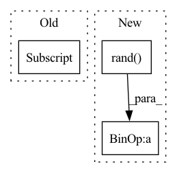

Pattern ID :24194
Before Change
("linear", mat0_fp32 + mat1_fp32, {}),
]
self.nn_fp32 = [
("avg_pool3d", dummy_bf16[3] , {"kernel_size": (3, 3, 3), "stride": (1, 1, 1)}),
("binary_cross_entropy", (torch.rand((n, n), device=dev, dtype=torch.bfloat16),) +
(torch.rand((n, n), device=dev, dtype=torch.bfloat16),)),
("reflection_pad1d", dummy_bf16[2], {"padding": (3, 3)}),After Change
("hinge_embedding_loss", mat0_bf16 + (torch.ones(n, device=dev, dtype=torch.int),)),
("margin_ranking_loss", mat0_bf16 + mat1_bf16 + (torch.ones((n,), device=dev, dtype=torch.bfloat16),)),
("triplet_margin_loss", mat0_bf16 + mat1_bf16 + mat2_bf16),
("binary_cross_entropy_with_logits", mat0_bf16 + (torch.rand( (n, n), device=dev, dtype=torch.bfloat16) ,)),
]
self.nn_bf16 = [
("linear", mat0_fp32 + mat1_fp32, {}),In pattern: SUPERPATTERN
Frequency: 5
Non-data size: 3
Instances Fragment ID: 75229819
Project Name: pytorch/pytorch
Commit Name: a09c3fcb8d0e290b8d398c110ddbfd845e6c4058
Time: 2022-08-16
Author: e.cao@intel.com
File Name: torch/testing/_internal/autocast_test_lists.py
M Class Name: AutocastCPUTestLists
N Class Name: AutocastCPUTestLists
M Method Name: __init__(2)
N Method Name: __init__(2)
M Parent Class: object
N Parent Class: object
M File Name: torch/testing/_internal/autocast_test_lists.py
N File Name: torch/testing/_internal/autocast_test_lists.py
M Start Line: 318
M End Line: 331
N Start Line: 237
N End Line: 350
Before Change
loc_scale = config["model"]["base"]["params"]["loc_scale"]
else:
loc_scale = 1.
q0 = nf.distributions.GaussianMixture(config["model"]["base"]["params"]["n_modes"] , latent_size,
loc=loc_scale * np.random.rand(n_modes, latent_size),
trainable=config["model"]["base"]["learn_mean_var"])
else:After Change
loc_scale = config["model"]["base"]["params"]["loc_scale"]
else:
loc_scale = 1.
loc = loc_scale * np.random.rand( n_modes, latent_size)
trainable = config["model"]["base"]["learn_mean_var"]
q0 = nf.distributions.GaussianMixture(n_modes, latent_size, loc=loc,
trainable=trainable)
else: Fragment ID: 75229818
Project Name: vincentstimper/resampled-base-flows
Commit Name: b7bc64651a642cdee29b58032808c5e2032f988f
Time: 2021-10-05
Author: vincent.stimper@gmail.com
File Name: larsflow/core.py
M Class Name: BoltzmannGenerator
N Class Name: BoltzmannGenerator
M Method Name: __init__(2)
N Method Name: __init__(2)
M Parent Class: NormalizingFlow
N Parent Class: NormalizingFlow
M File Name: larsflow/core.py
N File Name: larsflow/core.py
M Start Line: 381
M End Line: 404
N Start Line: 381
N End Line: 405
Before Change
choice = weights.multinomial(1)
if choice.item() != 0:
// If the choice is not 0, one of the new datapoints is chosen
self.choice.copy_(data[choice - 1] )
// In any case, the cumulative distances are updated
self.cumulative_squared_distance.add_(squared_distances.sum())After Change
data_dist = squared_distances.sum()
cum_dist = data_dist + eps + self.cumulative_squared_distance
use_choice_from_data = (
torch.rand( self.num_choices, device=data.device, dtype=data.dtype) * cum_dist
< data_dist + eps
)
Fragment ID: 75229816
Project Name: borchero/pycave
Commit Name: 6d08623932e425385192f37f888e2fab68338fa0
Time: 2021-10-19
Author: oliver@taskfleet.io
File Name: pycave/clustering/kmeans/metrics.py
M Class Name: DistanceSampler
N Class Name: DistanceSampler
M Method Name: update(3)
N Method Name: update(3)
M Parent Class: Metric
N Parent Class: Metric
M File Name: pycave/clustering/kmeans/metrics.py
N File Name: pycave/clustering/kmeans/metrics.py
M Start Line: 107
M End Line: 116
N Start Line: 125
N End Line: 143
Before Change
assert res[2,2] == 3
assert not np.any(res[2,:2])
assert not np.any(res[:2,2])
res[:3,:3] = 0
assert not np.any(res)
res = np.zeros((5,5), np.long)After Change
def test_cooccurence():
np.random.seed(222)
f = np.random.rand( 32, 32)
f = (f * 255).astype(np.int32)
assert np.all(mahotas.texture.cooccurence(f, 0) == brute_force(f, 0, 1))
assert np.all(mahotas.texture.cooccurence(f, 1) == brute_force(f, 1, 1)) Fragment ID: 75229811
Project Name: luispedro/mahotas
Commit Name: 93663c2cc8c0c8bc3c6f28c27679707305948c80
Time: 2010-05-11
Author: lpc@cmu.edu
File Name: tests/test_texture.py
M Class Name: AnonimousClass
N Class Name: AnonimousClass
M Method Name: test_cooccurence(0)
N Method Name: test_cooccurence(0)
M Parent Class:
N Parent Class:
M File Name: tests/test_texture.py
N File Name: tests/test_texture.py
M Start Line: 5
M End Line: 32
N Start Line: 46
N End Line: 50
Before Change
for i in range(batch_size):
for j in range(seq_in_len):
x, _ = create_mock_data(number_of_nodes=num_nodes, edge_per_node=8, in_channels=in_dim)
x_all[i,j] = x
model = MTGNN(gcn_true, buildA_true, gcn_depth, num_nodes,
dropout=dropout, subgraph_size=subgraph_size,
node_dim=node_dim,After Change
_, edge_index = create_mock_data(number_of_nodes=num_nodes, edge_per_node=8, in_channels=in_dim)
mock_adj = to_scipy_sparse_matrix(edge_index)
predefined_A = torch.tensor(mock_adj.toarray()).to(device)
x_all = 2 * torch.rand(batch_size, seq_in_len, num_nodes, in_dim) - 1
model = MTGNN(gcn_true, buildA_true, gcn_depth, num_nodes,
dropout=dropout, subgraph_size=subgraph_size,
node_dim=node_dim, Fragment ID: 75229810
Project Name: benedekrozemberczki/pytorch_geometric_temporal
Commit Name: 2995bbe0ea41e33175133eefde748771c07e96e9
Time: 2021-03-25
Author: He_YX@outlook.com
File Name: test/convolutional_test.py
M Class Name: AnonimousClass
N Class Name: AnonimousClass
M Method Name: test_mtgnn(0)
N Method Name: test_mtgnn(0)
M Parent Class:
N Parent Class:
M File Name: test/convolutional_test.py
N File Name: test/convolutional_test.py
M Start Line: 204
M End Line: 229
N Start Line: 204
N End Line: 224